JIANXIN PROJECT MANAGEMENT
健忻医疗项目管理系统
用户指导手册
目录
- 文档说明
- 系统概述与登录
- 工作台
- 产品组合
- 项目管理
- 阶段任务
- 数据看板
- 文档空间
- 组织部门
- 附录 A 权限与常见问题
- 附录 B 版本记录
文档说明
本手册按日常工作顺序，说明当前一期项目管理的完整路径：
运营平台直达（或登录） → 工作台 → 产品组合 → 创建项目 → 添加阶段 → 建任务并推进 → 数据看板回顾 → 文档归档 → 查看组织同事
贯穿示例使用现网项目「东南大学智能实验室管理系统」。阅读后文前，先熟悉下面这些界面用语。
| 界面用语 | 含义 |
|---|
| 产品组合 | 产品列表 + 医疗档案 |
| 产品档案 | 型号、管理类别、注册证、有效期等字段 |
| 阶段任务（一级菜单） | 所有阶段的列表和看板入口 |
| 阶段（项目内） | 一段时间的工作容器 |
| 数据看板 | 经营总览 / 部门经营 / 项目组合 / 会议视图 |
| 组织部门 | 团队与部门视图 |
| 组织设置 | 管理员后台，普通用户通常不可见 |
| 临期 | 证照有效期在 90 天以内 |
组织设置仅管理员可见，本手册不展开后台配置。
1. 系统概述与登录
1.1 你能做什么
登录后，左侧通常可以看到这些入口（管理员还会看到「组织设置」）：
| 菜单 | 用来做什么 |
|---|
| 工作台 | 看待办、待处理任务、审批、我参与的项目 |
| 产品组合 | 维护产品档案（型号、管理类别、注册证、有效期等） |
| 项目管理 | 创建并管理项目，拆阶段 |
| 阶段任务 | 在阶段里建任务、更新进度、完成任务 |
| 数据看板 | 看项目健康度、逾期任务、部门汇总 |
| 文档空间 | 放产品 / 项目 / 个人文档 |
| 组织部门 | 查看同事、部门归属 |
主路径：把产品建档 → 创建项目并关联产品 → 添加阶段 → 建任务并完成 → 用看板看逾期与风险 → 把资料放到文档空间。
1.2 进入系统
推荐方式：从健忻数智化运营平台一键直达（免登录）。
- 先登录健忻数智化运营平台。
- 在顶栏最右侧、系统配置旁边，点项目管理。
- 系统会直接打开项目管理系统并进入工作台，无需再次输入账号。
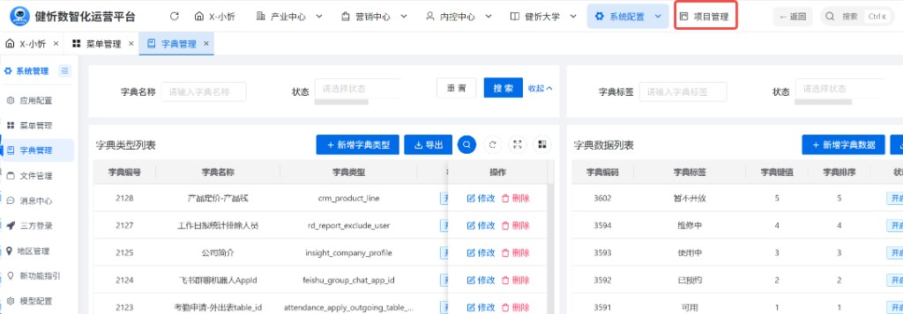
图 1-1 运营平台顶栏「项目管理」入口
备选方式：账号登录页。若暂时打不开运营平台，可在浏览器打开登录地址 https://pm.jenshin.cn，在「欢迎登录」中输入用户名和密码，再点登录。右上角可切换简体中文 / English。
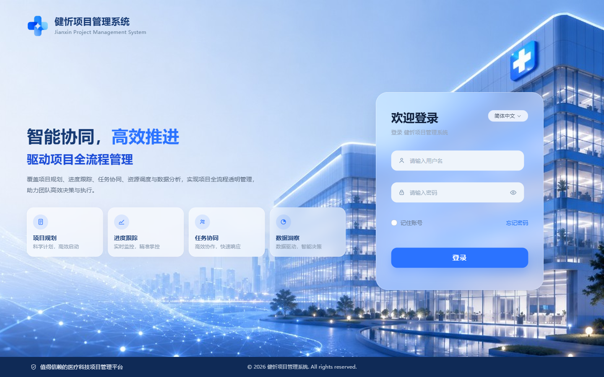
图 1-2 登录页
进入后，右上角会显示你的姓名，左侧是一级导航。
2. 工作台
2.1 目的与入口
每天先看工作台，确认「需关注」和待我处理的事项，再进入具体项目。登录后默认进入工作台，也可点左侧「工作台」。
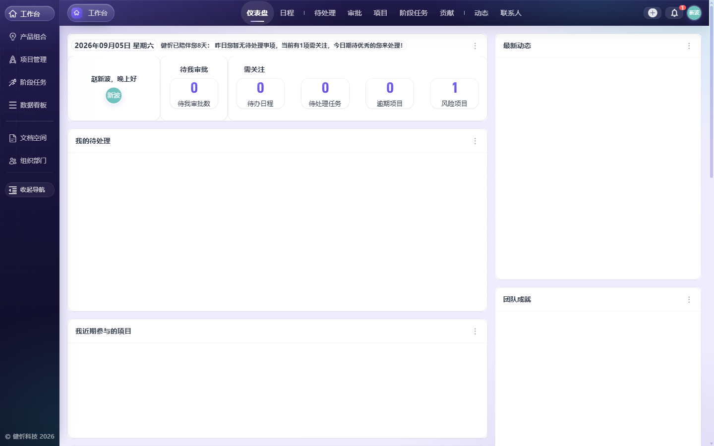
图 2-1 工作台与一级导航
顶栏有：仪表盘、日程、待处理、审批、项目、阶段任务、贡献、动态、联系人。
2.2 需关注
| 数字 | 含义 | 点进去到哪 |
|---|
| 待办日程 | 今天及未完成的日程 | 日程 |
| 待处理任务 | 指派给你、尚未完成的任务 | 待处理 · 指派给我 |
| 逾期项目 | 按看板口径统计的逾期项目 | 数据看板总览（有权限时） |
| 风险项目 | 健康度为风险的项目 | 数据看板总览 |
数字可以点击。没有事项时显示 0。
2.3 待处理任务
- 点顶栏待处理，或点欢迎区「待处理任务」。
- 默认看「指派给我」。
- 列表一般为：ID、任务名称、优先级、状态、所属项目、所属阶段任务、创建者、操作。
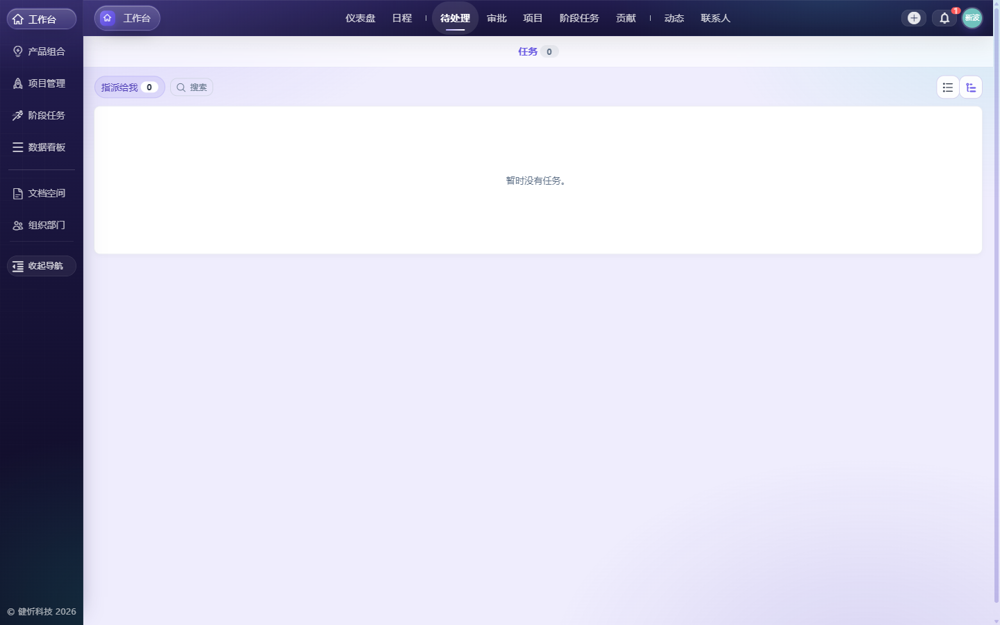
图 2-2 待处理任务（指派给我）
若显示「暂时没有任务」，说明当前没有指派给你的未完成任务，可以从「项目管理」或「阶段任务」进入在办项目继续推进。
2.4 审批
点顶栏审批。没有待审时显示「暂无」。
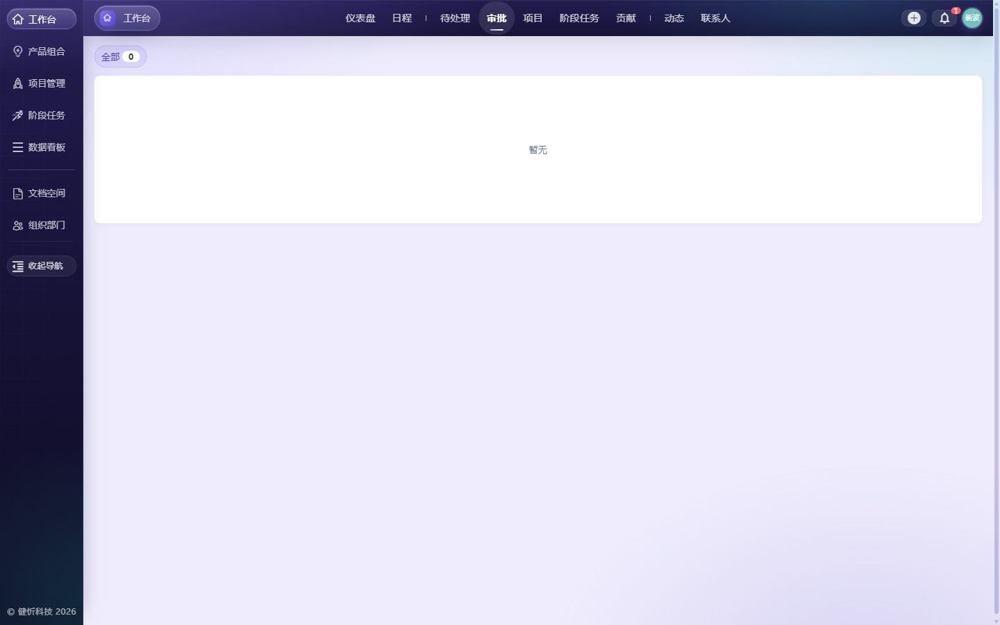
图 2-3 审批
3. 产品组合
3.1 查看产品列表
先把产品档案建清楚，再挂项目。列表会直接显示医疗档案字段，证照 90 天内到期会标临期。
- 点左侧产品组合。
- 可用「全部产品 / 未关闭 / 结束」筛选，或搜索名称。
- 点右上角添加产品可新建（按页内必填项填写）。
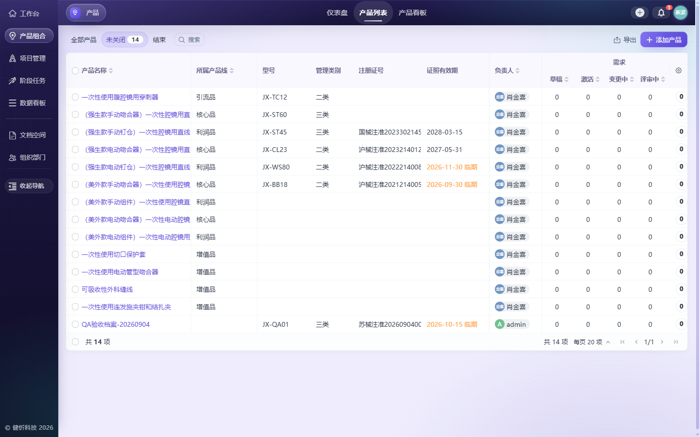
图 3-1 产品列表（含档案列与临期）
请关注：型号、管理类别、注册证号、证照有效期（90 天内显示橙色「临期」）。
3.2 查看产品详情
- 在列表点产品名称（例如「东南大学智能实验室管理系统」）。
- 进入产品概况 / 仪表盘。
- 顶栏为：仪表盘、项目、文档、动态、设置。
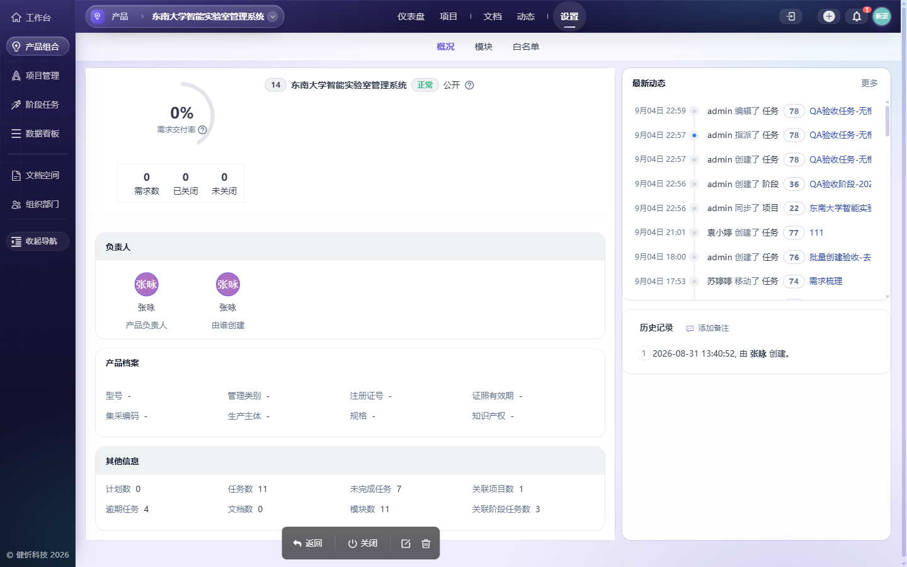
图 3-2 产品概况与档案面板
产品档案字段：型号、管理类别、注册证号、证照有效期、集采编码、生产主体、规格、知识产权。未填写显示「-」。同页还能看到任务数、逾期任务、关联项目数。
3.3 编辑档案
- 在详情底栏点编辑，或从列表进入编辑。
- 修改基础信息和档案字段后保存。
- 列表勾选多条后点「编辑」，可批量改管理类别、注册证号、证照有效期。
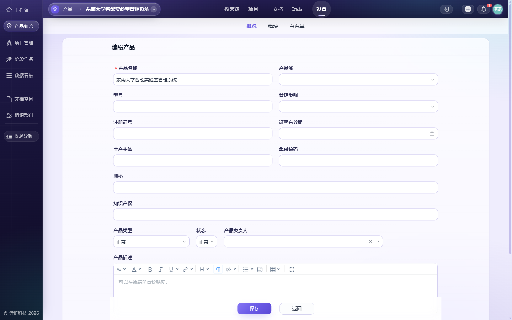
图 3-3 编辑产品（含档案字段）
4. 项目管理
4.1 查看项目列表
项目是阶段和任务的容器。在列表中创建项目后，填写名称、负责人、周期并关联产品即可。
- 点左侧项目管理。
- 可用全部 / 未完成 / 未开始 / 进行中筛选；可打开「我参与的」。
- 点创建项目新建；点项目名称进入该项目。
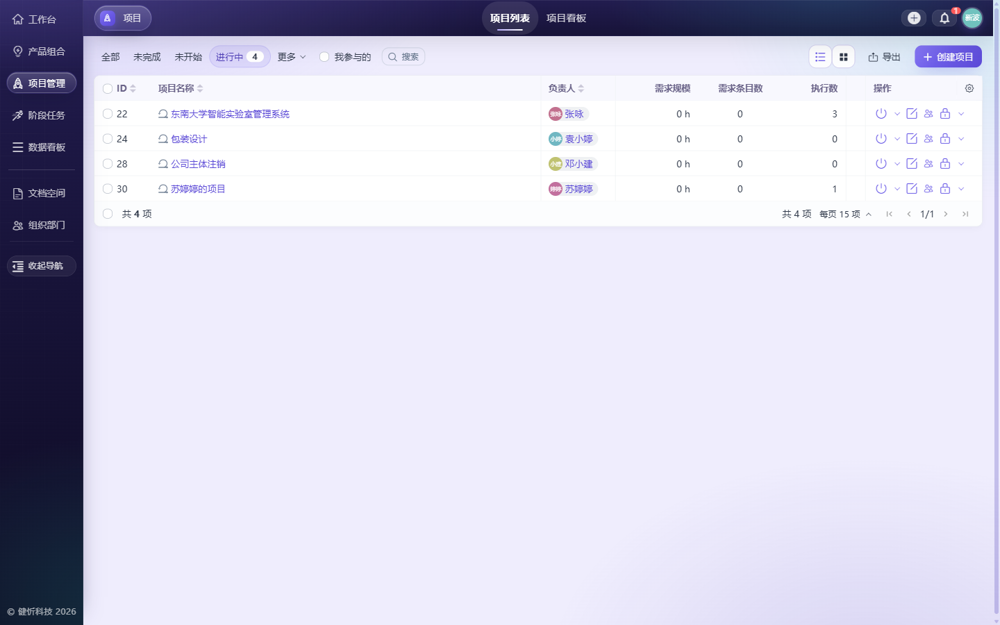
图 4-1 项目列表
操作列是否出现团队、权限、白名单，取决于你的权限组。以自己能看到的按钮为准。
4.2 创建项目
- 在项目列表点创建项目。
- 选择产品型或项目型。
- 填写项目名称、负责人、计划日期。
- 关联产品：尽量选已建档的产品；未选时系统可能自动创建与项目同名的产品。
- 按需填写描述，点保存。
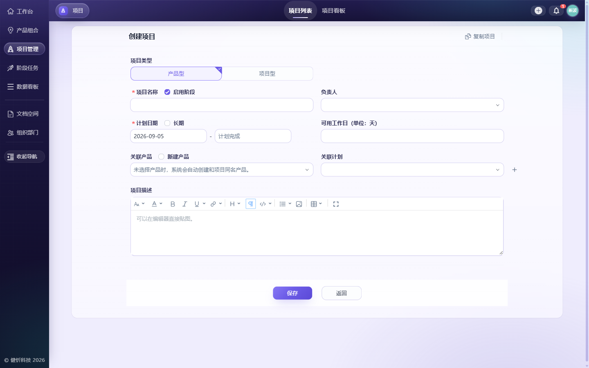
图 4-2 创建项目
4.3 进入项目
以「东南大学智能实验室管理系统」为例：在列表点名称，进入项目仪表盘。顶栏常见为：仪表盘、阶段、文档、动态、设置。
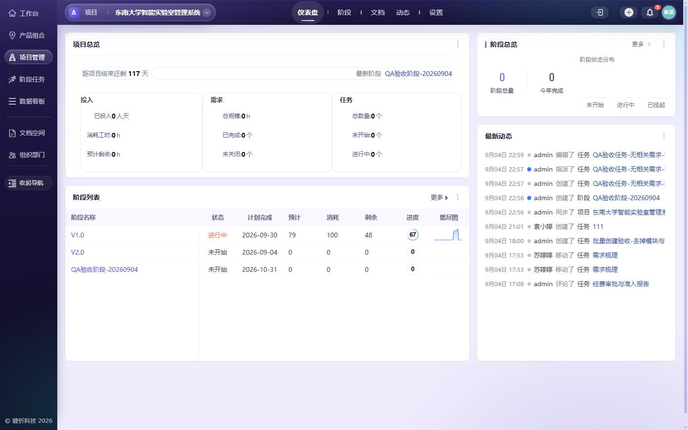
图 4-3 项目仪表盘
4.4 添加阶段
- 在项目里点阶段，或到一级菜单阶段任务点添加阶段。
- 确认所属项目，填写阶段名称；类型选短期 / 长期 / 运维。
- 填写计划起止日期。
- 点保存。
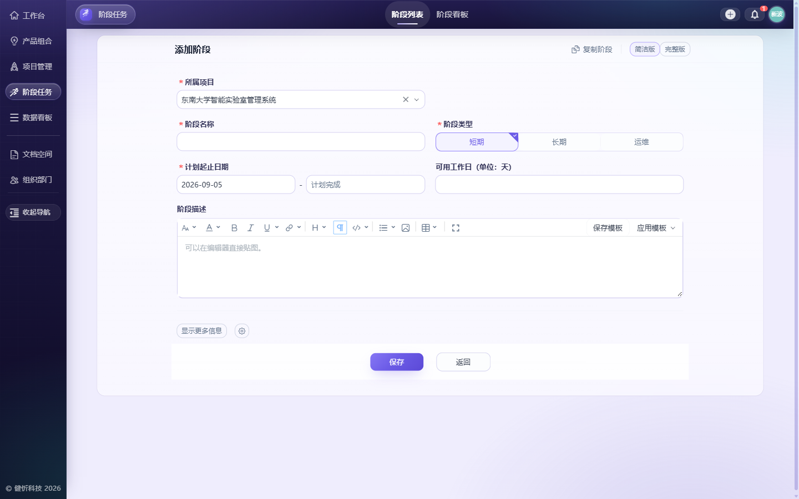
图 4-4 添加阶段
5. 阶段任务
5.1 阶段列表
阶段是一段时间的工作容器。日常在阶段的任务列表里创建、指派、开始和完成任务。
- 点左侧阶段任务。
- 顶栏可切阶段列表 / 阶段看板。
- 点阶段名称（如 V1.0）进入该阶段。
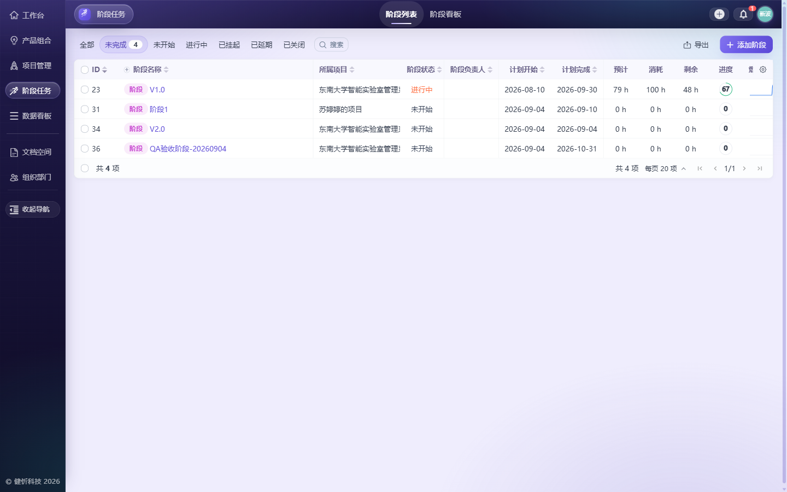
图 5-1 阶段列表
5.2 阶段内任务列表
进入阶段后，顶栏常见为：任务、燃尽图、视图、文档、动态、设置。
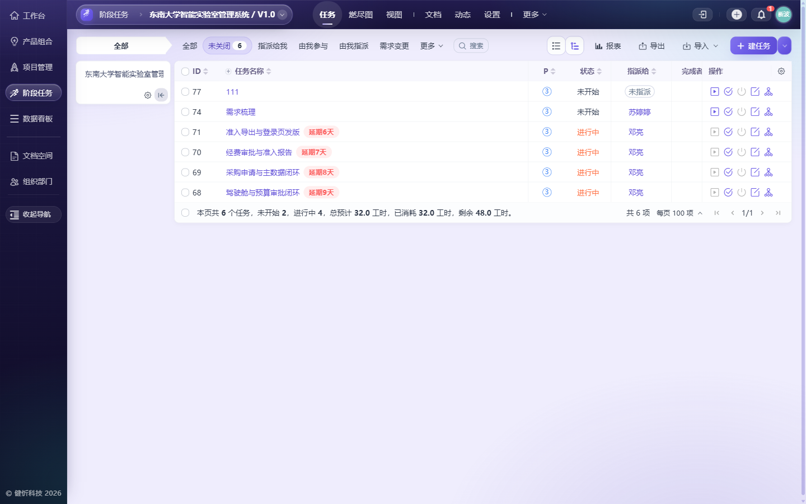
图 5-2 阶段 V1.0 任务列表
可按「全部 / 未关闭 / 指派给我」筛选，点建任务，或在行内点开始、完成。任务列包括 ID、任务名称、优先级、状态、指派给、完成者、截止日期、工时等。
5.3 建任务
- 在阶段任务列表点建任务。
- 可先用「简洁版」，需要更多字段再切「完整版」。
- 填写任务类型、指派给、任务名称、优先级、预计工时、描述。
- 点保存。
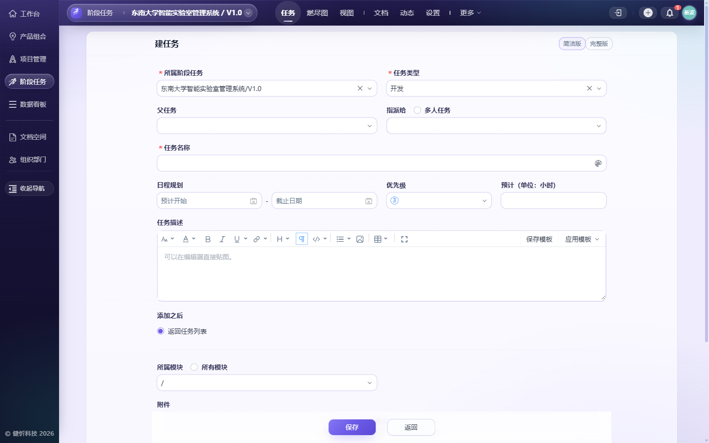
图 5-3 建任务表单
5.4 查看与完成任务
- 在列表点任务名称，例如「驾驶舱与预算审批闭环」。
- 详情里看阶段、指派、类型、状态、进度、优先级和描述。
- 开始处理时点开始并填写消耗 / 剩余。
- 做完后点完成，在弹窗里填写本次消耗、实际起止时间和备注，再点弹窗中的完成。
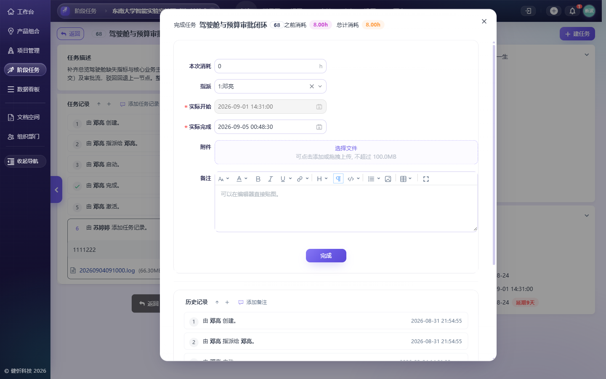
图 5-4 完成任务
6. 数据看板
6.1 经营总览
晨会、周会或自己复盘时使用。需要权限组勾选「数据看板 · 浏览」。点左侧数据看板，可按部门、产品、状态筛选。
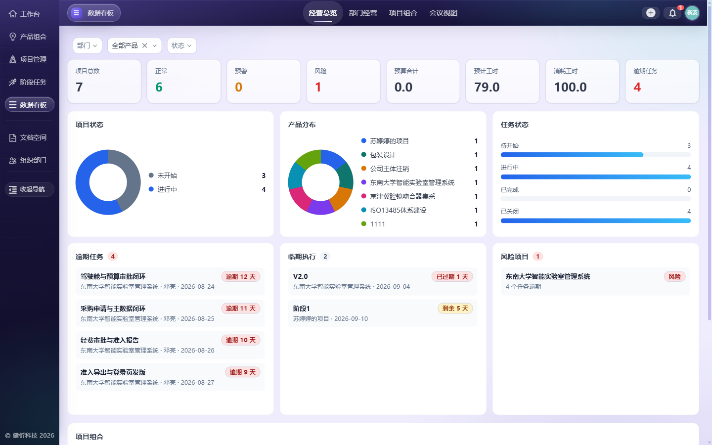
图 6-1 经营总览
顶部 KPI：项目总数、正常 / 预警 / 风险、预算、工时、逾期任务。没有数据时用「清除筛选」重置。
6.2 逾期与会议视图
总览和会议视图都会列出逾期任务，点条目可进入对应任务。会议视图同时列出临期阶段，适合会前投影。
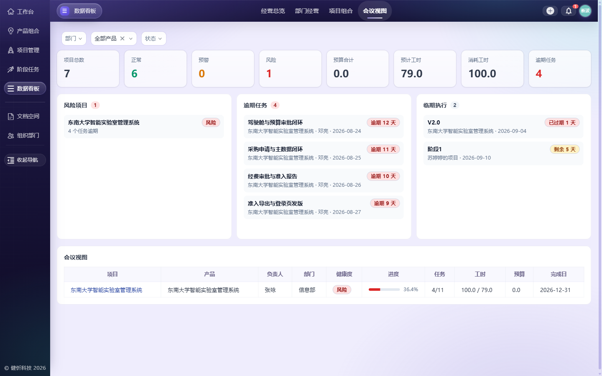
图 6-2 会议视图中的逾期任务
 图 6-3 会议视图
图 6-3 会议视图
6.3 部门经营
点顶栏部门经营，按部门看项目数、工时、逾期、风险。未分配部门的项目计入「未分配」，请在组织部门维护负责人所属部门。
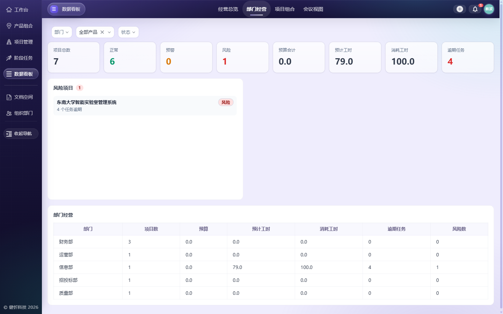
图 6-4 部门经营
6.4 项目组合
点项目组合。表格含健康度（正常 / 预警 / 风险）、进度、任务、工时、预算、完成日。
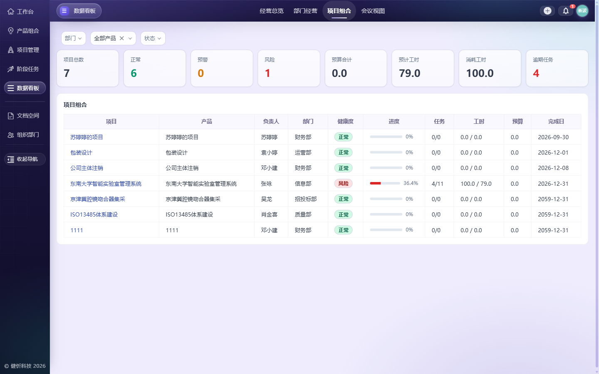
图 6-5 项目组合
7. 文档空间
把方案、会议纪要、过程资料放到统一空间。入口：左侧文档空间，或产品 / 项目 / 阶段顶栏里的文档。
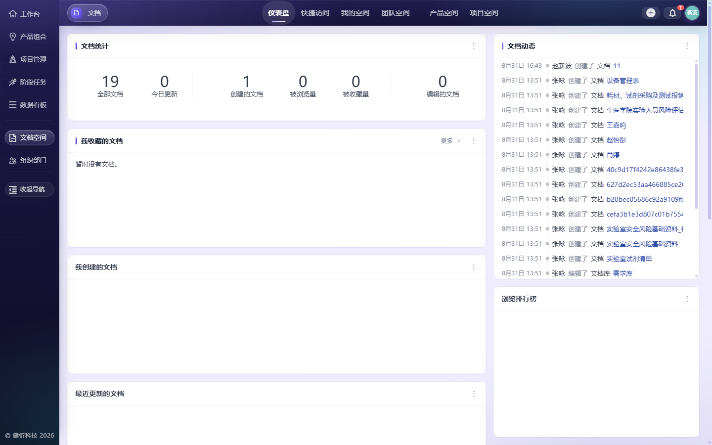
图 7-1 文档空间首页
顶栏常见：仪表盘、快捷访问、我的空间、团队空间、产品空间、项目空间。在对应空间新建文档库或文档即可。
8. 组织部门
查看同事与部门归属。数据看板按部门汇总时，依赖这里的部门信息。点左侧组织部门。
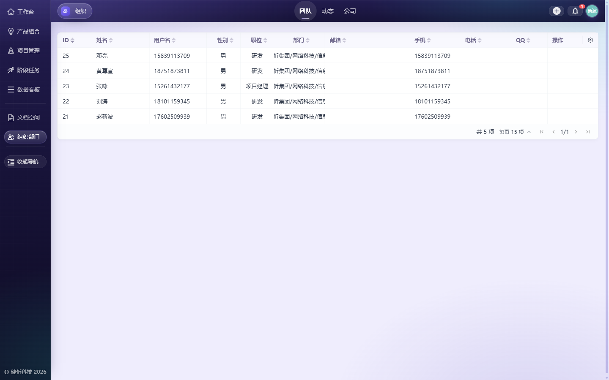
图 8-1 组织部门（团队）
列表含姓名、用户名、职位、部门、联系方式等。部门路径示例：健忻集团 / 网络科技 / 信息部。
组织设置（部门增删、账号开通、权限分组）由管理员在后台维护。普通账号看不到该菜单时，把人员和权限事项告诉管理员即可。
右上角姓名可进入个人资料、修改密码等，以你账号实际菜单为准。
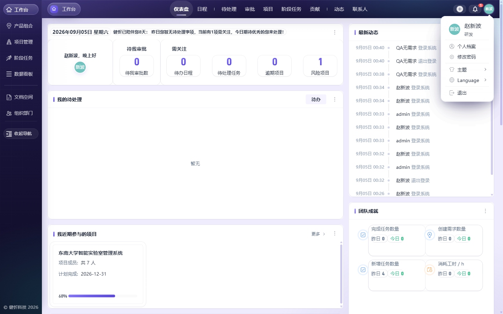
图 8-2 登录后右上角身份
附录 A 权限与常见问题
「健忻用户」一类业务权限通常可以：浏览并维护产品、创建/编辑项目与阶段、创建/完成任务、浏览数据看板四视图、使用文档空间。具体以你被分配的权限组为准。
- 提示无权访问 — 请联系管理员检查账号权限或权限分组。
- 点产品名称进到哪一页？ — 进入该产品的概况 / 仪表盘。
- 证照「临期」怎么算？ — 有效期距今天 90 天以内。
- 数据看板菜单在，但进不去 — 请管理员勾选「数据看板」的浏览（总览 / 部门 / 组合 / 会议）。
附录 B 版本记录
| 版本 | 日期 | 说明 |
|---|
| 1.0 | 2026-09-05 | 首版。覆盖现网一期项目管理主路径。 |